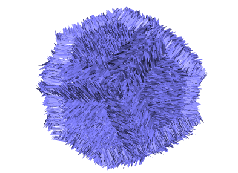
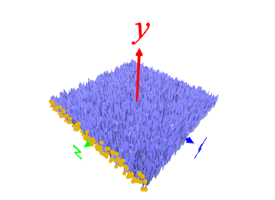
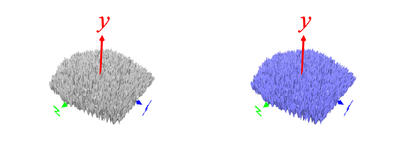

[1] 乱数で面をつくる
p surface (xの定義域) (zの定義域) (f(x,z)の式)
(例)
p surface np.linspace(-1,1,100) np.linspace(-1,1,100) 0.3*np.random.rand(100,100)
surface ･･･ メッシュ化
save glass.ply ･･･ メッシュをセーブ

[2] 即席ツールで五角形に刈り込む
python prune_mesh.py glass.ply 5 1 ･･･ glass.ply を外接円半径 1 の 5角形で刈り込む
l glass_pruned.ply ･･･ 刈り込まれたメッシュをロード
c 128 128 255 ･･･ 色を付ける
save blue_glass.ply ･･･ セーブ

[3] 正 12 面体を作成するスクリプトをコピー～改造
data/dodecahedron.txt をコピーし
(変更前) polygon 5 1 -0.01 ･･･ 正5角形を作成する。2か所ある
↓ ↓
(変更後) l blue_glass.ply ･･･ blue_glass.ply のロードに置き換える
スクリプトを実行する